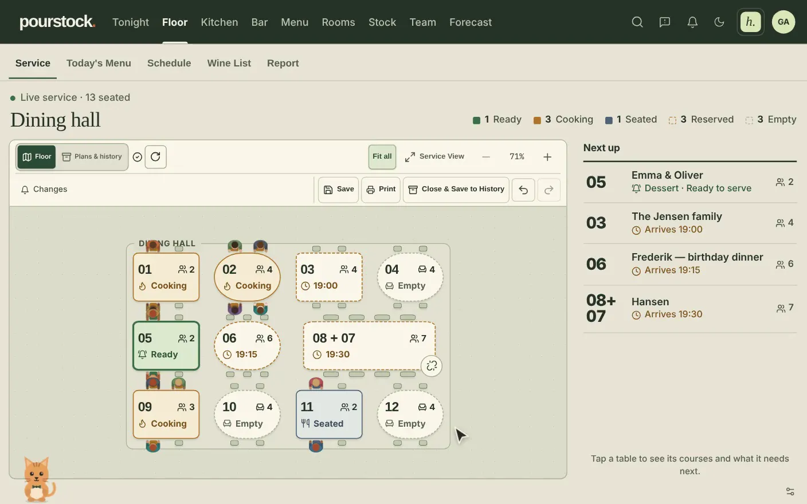
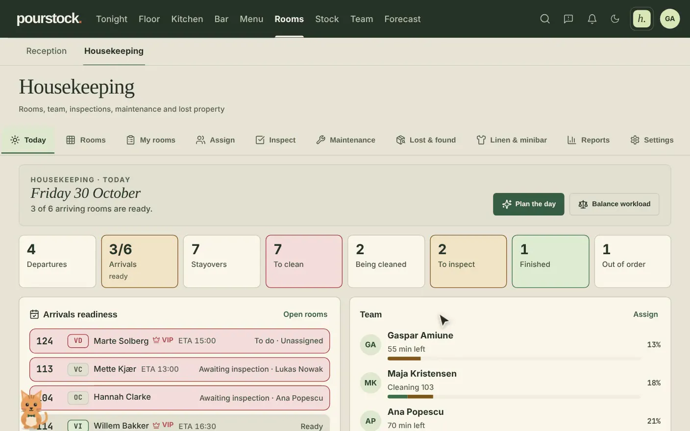
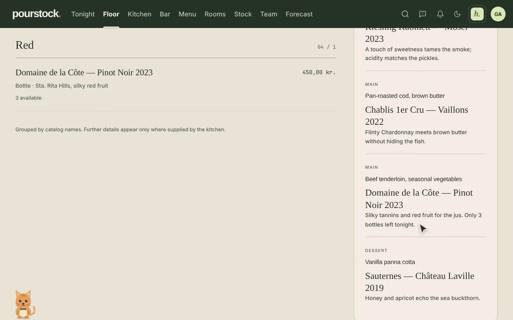
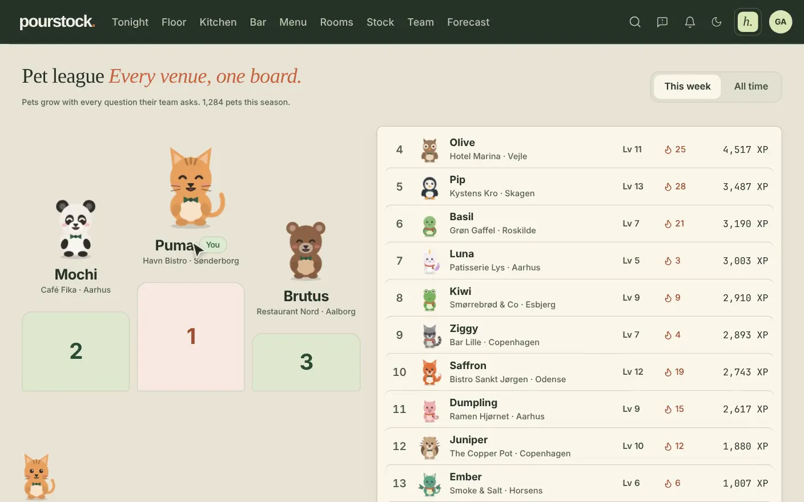

PourStock
My startup: one operations app for restaurants, hotels and cafés, built from scratch with Claude Code.
Year2026
RoleFounder
TeamSolo founder, AI coding agents
StatusLive

01The project
After 11 years working in restaurants and hotels, I built the tool I always wanted: floor plan and orders, kitchen screens, the bar, reception and housekeeping, stock, shift planning, forecasts and reports in one app. It is live at pourstock.com and in pilot use at a hotel in Denmark.
I used Claude to build it from scratch. My work is the product, the architecture and the rules that keep AI-written code safe to ship to real staff on a real service night.
02What I did
- AI constitution: a written rulebook every coding agent must follow (tenant isolation, additive-only database changes, banned actions), with its key rules checked automatically on every change.
- Quality gate: unit tests, end-to-end browser tests and rule checks run on Linux CI before anything reaches a customer.
- 24/7 support agent: staff report a problem on Telegram or in the app, Claude triages and answers on the same channel, and fixable bugs go to a coding agent whose fix must pass the tests.
- Forecast-driven planning: a Python demand-forecasting service (Docker) feeds the AI shift planner and a stock agent that drafts supplier orders for a manager to approve.
- Load tests with 10 simulated venues: completed steps rose from 58 % to 96 % after the fixes they pointed to.
03How it fits together
04Under the hood
TypeScript + Reactthe web app every role uses: floor, kitchen, bar, reception, stock and shifts.
PostgreSQL (Supabase)the data model, with row-level security so each venue only ever sees its own data.
Deno edge functionsserver-side logic and the calls to Claude, kept behind one shared helper.
Pythonthe demand-forecasting service, packaged as a Docker container.
Playwrightend-to-end tests that click through the app like a waiter would.
05In motion
06Figures


